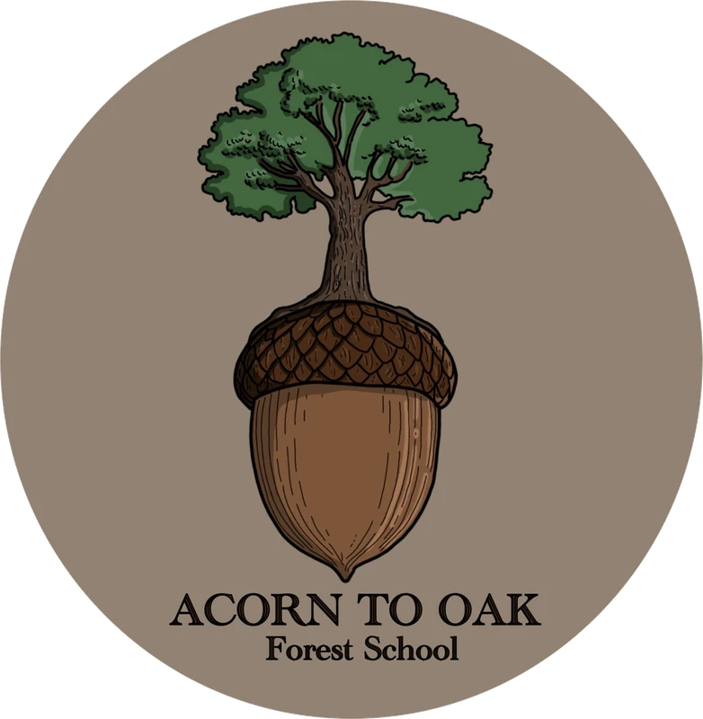

Forest School · Kirkstall Valley Farm, Leeds
From acorn to oak — room to grow, at their own pace.
A small, nurturing Forest School for ages 5–12, meeting weekly on the banks of the Aire, just outside Leeds city centre.
Our Approach
We take play seriously.
Free, unstructured play in nature is not the opposite of learning. It is one of the deepest forms of learning available to a child — developing physical confidence, emotional regulation, social intelligence, creative thinking, and a felt relationship with the living world that no curriculum can replicate.
A rhythm, not a timetable
Our sessions follow a gentle daily rhythm inspired by the 8 Shields model of nature-based mentorship — moving from arrival and belonging, through exploration and curiosity, into skill and craft, and closing with reflection and community. This arc isn't always visible. It doesn't need to be. It's the invisible structure beneath a day that feels, to the children, like freedom.
“The days when a child comes home muddy and unable to articulate what they did are often the richest days of all.”


Throughout the Year
Seasonal skills, offered as invitations
Throughout the year we weave seasonal skills and knowledge into the rhythm of our days. These are offered as invitations, not instructions — a child who spends three sessions watching before picking up a knife is learning patience, observation and readiness. A child who forages and cooks their own lunch on an open fire is learning chemistry, ecology, nutrition and confidence, all at once.

Fire lighting
From bow-drills to open flames, taught with patience and respect.

Wild food
Foraging for what's ripe, then cooking it over an open fire.

Natural crafts
Clay, wood and found materials, shaped by curious hands.

Plant ID & tracking
Learning to read the woodland — what grows, what passes through.
A Few Muddy Moments
Gallery

Join Us
About our sessions
- Where
- Kirkstall Valley Farm, beside the river, just outside Leeds city centre. Get directions
- When
- Weekly, term time — Tuesdays, 9:30am to 2:30pm.
- Who
- Ages 5–12.
Fees
The Three Bottle Method
We use a sliding scale with three tiers, and something called the three bottle method to help families choose honestly. Imagine three bottles of the same wine on a shelf — one on offer, one full price, one premium.
Concession
£25 / session
If you always reach for the one on offer — perhaps money is tight — this rate is for you, no questions asked.
Standard
£32 / session
If you comfortably reach for the full price bottle without much thought, this rate reflects that.
Supporter
£42 / session
If you often reach for the premium bottle, this rate helps make the concession rate possible for others.
“There is no means testing and no judgement. You decide which bottle you reach for.”
Meet the Team
Dan & Katy

Dan — Founder & Lead Practitioner
I'm Daniel, and I've been leading forest school sessions for three years now. I always wanted to teach, but found the mainstream school system a difficult fit. When I eventually moved off-grid and found myself re-thinking what I wanted to do with my working life, a friend mentioned they were a forest school teacher — and something clicked immediately. I signed up for a course that same week.
Forest school gave me everything I didn't know I was looking for: a way to be outside, to connect with nature, to play and explore, and to share all of that with the next generation. I love getting down to the children's level — following their curiosity, being playful and creative, and having the patience and compassion to help them through hard moments, big emotions, and the process of learning new skills and new ways of being.
Forest School Leader Level 3 · Outdoor First Aid Trained · Safeguarding Qualified · DBS checked

Katy — Co-Lead & Session Coordinator
I'm Katy, a qualified Forest School Assistant (Level 1, 2025), and I've been working and volunteering in forest schools and childcare since 2023. I studied at Leeds Art College, and creativity has stayed at the heart of everything I do since. I'm passionate about offering children an alternative to conventional education — one built on play, curiosity, and connection to the natural world.
Outside of forest school, I'm a musician and maker, always looking for new ways to be creative. I'm an empathetic, playful, and resilient person who loves being outdoors, and I feel lucky to get to share that love with the next generation. I can't wait to welcome you and your little ones into our forest school community.
Forest School Assistant Level 1

Safety & Peace of Mind
You can relax while they get muddy
Fully insured
Public liability cover in place for every session, on and off site.
First-aid trained
Outdoor first-aid qualified practitioners at every session, with a well-stocked kit on site.
DBS-checked
Enhanced DBS checks for every adult working directly with your children.

Book your child's place
Choose your sessions and secure your child's place below. If you'd rather not book online, just get in touch and we'll sort it out together.